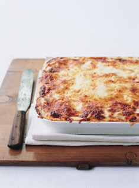

Lasagne recipe
From donnahay.com.au

Description
Real lasagne is such a treat - a celebratory dish to be shared
by many. Try my traditional bolognese version. It might look
like an epic recipe but it's not that daunting. The bolognese
and bechamel can be made a couple of days in advance and even
frozen, and the entire lasagne can be assembled the day before
and then baked on the day, making it perfect for a dinner
gathering.
Ingredients
White sauce
- 80g butter
- 4tbsp plain flour
- 1 litre milk
- 3/4 cup grated parmesan cheese
- Salt and pepper to taste
Steps
- Make the bolognese sauce and set aside.
-
To make the white sauce, place the butter in a saucepan over
medium heat and allow to melt. Add the flour and stir to a
smooth paste. Whisk in the milk and then stir until the sauce
has boiled and thickened. Stir in the parmesan and add the
salt and pepper. Set aside to cool to room temperature. Preheat
the oven to 190°C (375°F). Grease a 20 cm (8 in) x 20 cm (8 in)
square ovenproof dish and line with some of the lasagne sheets.
-
Thinly spread over quarter of the basic bolognese sauce, cover
with more lasagne sheets, then spoon over quarter of the white
sauce. Repeat the layers, finishing with the white sauce.
Sprinkle with the mozzarella and bake for 25–30 minutes or
until golden brown and cooked. Serve with a simple salad.
Serves 4.